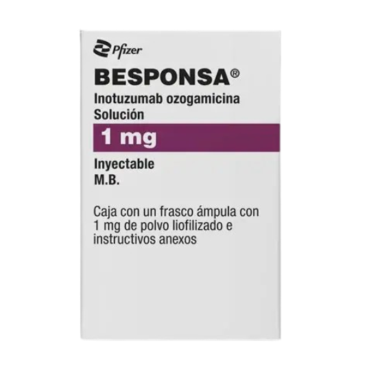
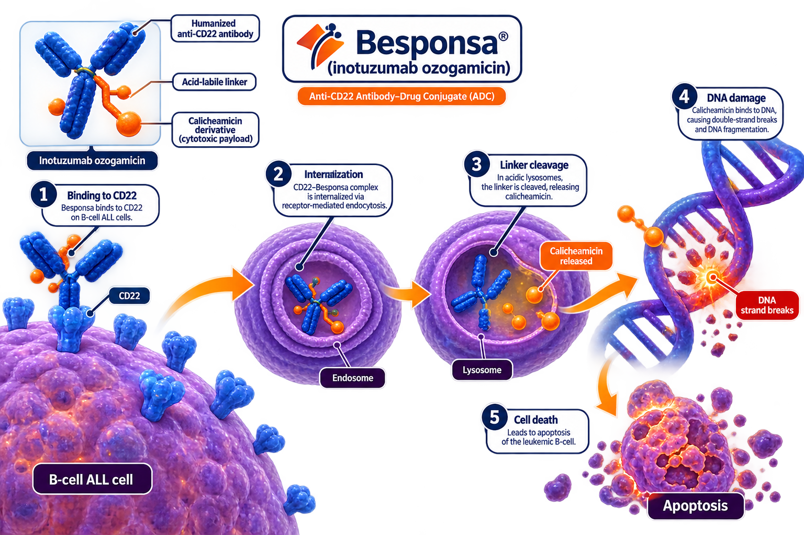

Pfizer
Besponsa (inotuzumab ozogamicin) is a CD22-directed antibody-drug conjugate indicated for the treatment of adults with relapsed or refractory B-cell precursor acute lymphoblastic leukemia (ALL).
Besponsa
Inotuzumab Ozogamicin
CD22 ADC
Intravenous Infusion
Pfizer
Inotuzumab ozogamicin is a CD22-directed antibody-drug conjugate. After binding to CD22-expressing B-cells, the complex is internalized and releases calicheamicin, a potent cytotoxic agent that causes DNA double-strand breaks and induces apoptosis.

| Trial | Setting | Outcome |
|---|---|---|
| INO-VATE ALL | Relapsed/Refractory ALL | Higher CR/CRi Rate |
| INO-VATE ALL | Relapsed/Refractory ALL | Improved MRD Negativity |
| INO-VATE ALL | Relapsed/Refractory ALL | Increased HSCT Eligibility |
Recommended starting dose: 1.8 mg/m² per cycle administered intravenously in divided doses on Days 1, 8 and 15.
| Recommended Dose | 1.8 mg/m² Per Cycle |
|---|---|
| Route | Intravenous Infusion |
| Schedule | Days 1, 8 and 15 of Each Cycle |
| Target | CD22 |